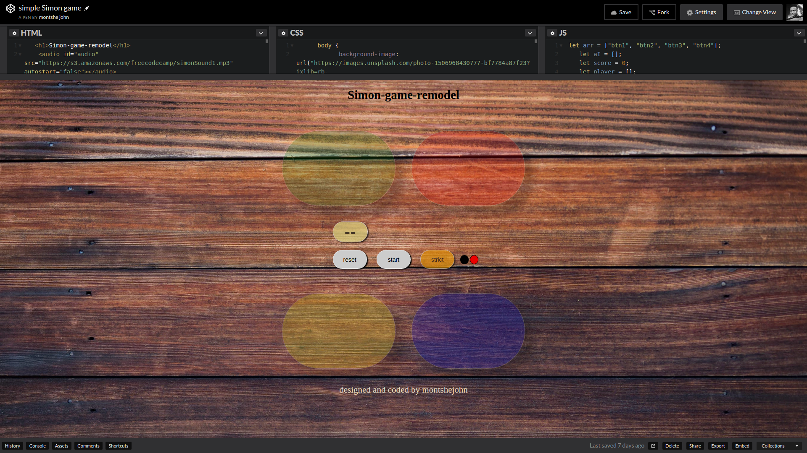
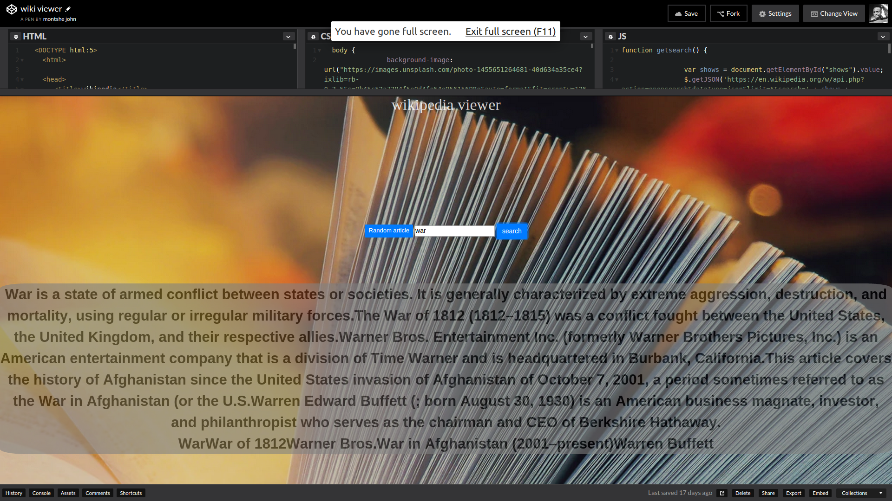
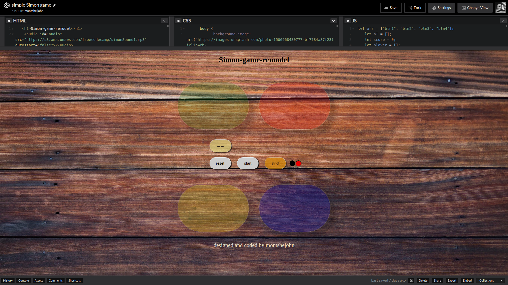
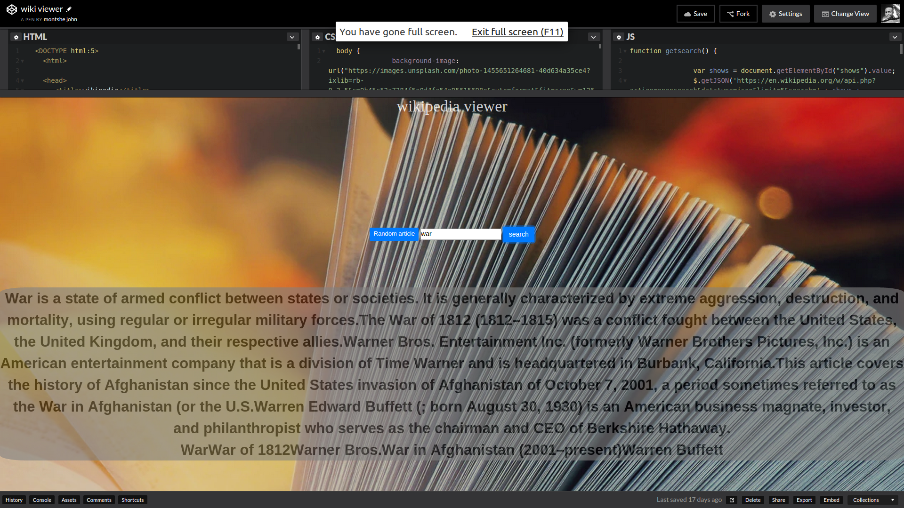

Montshe John
About Me
HI there my name is Johannes Mokgokong
I am a Student, chess player, team-player and of INFP Personality type. I have a passion for computer programming. I believe in this modern world s computer programming has the power to change a lot of lives and anybody with a passion to code can learn how to code. So far I have done projects using JavaScript, Css3, HTML5,React.js Node.js, and Sass .My interests besides coding are type-racing,reading blogs preferably on medium.com, and playing chess.
bloging.
I am a good story teller well "thats what I believe .. its good to have positive mindset" mostly I kill time by writting and reading blogs most of them are about tech stuff or projects that I have worked on and the stuff I learned/currently learning about.
blogging is a great way to share stories,life-experiences,lessons,tips,and above all inspire, others I wish I could instanly become a better writer so I could share my stories with the world ... please visit this link to see my blogs so far..
click me!!! 


